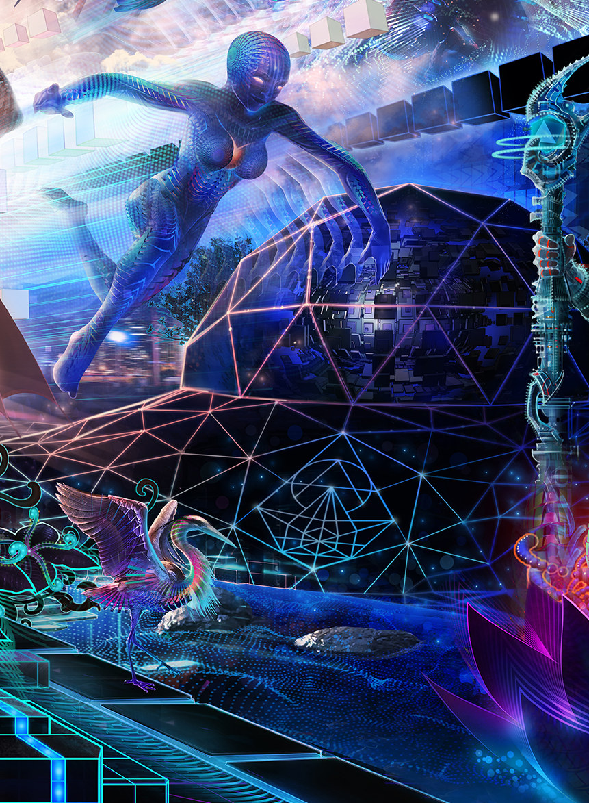

üåé Hacker Sailing, with Mitch Altman
This May 26th - June 2nd 2019 Astralship is going on a very special week-long voyage under the expert leadership of Mitch Altman. Deep in Snowdonia, we will go on a journey of deep-tech magic and innovation. The crew will hack together, learn together, have fun in the Snowdonia spring-shine and work on innovating some new systems that might help keep our civilization going.
The retreat is being privately organised for committed Astral pirates, hackers and makers. We’re going to go on max-creative peak-performance deep-dive into the Astral with Mitch.
"Our voyage will collectively be created by the synergy among all who join. We will all learn a lot. We will all make new friends. We will all grow. We will all leave with motivation, encouragement, and inspiration for moving forward in our lives."
Where will we sail? - #unvoyage
The ship will sail where the crew takes it and your unique skills and contributions will ultimately decide where we get to. Currently there are 3 broad areas members of the core team are interest in exploring. Utimiately anyone can do whatever they want, we're adopting the single rule code used at Noisebridge, "Be excellent to each other!".
1. Sustainable Tech, Smart-Agriculture and Energy.
We’re not sustainable, despite our achievements the planet that gave us life is dying fast. Humanity's future will be decided soon so there's not a day to waste. It’s for ‘us’ to make sure we have sustainable systems and not for 'the system' to do it for us. So let's amp up our creativity and performance and find ways to show we're not done yet.
Tyddyn Teg organic farm is just down the hill from us, we can arrange site visits. The farm has been involved in projects like the Weedinator (EMF Camp 2018) and the farmers are passionate about innovation.

2. Geo-spacial gaming for Health and Wellbeing
We can also take advantage of the beautiful Snowdonia-scape. With Arduino, wifi, GPS and some creativity we could design and prototype fun games to encourage players to get out, get fit and enjoy the mountains.
Snowdonia is the setting for many tales from the Mabinogi, Britain’s oldest folklore. Perhaps a fusion of old stories and new tech will capture imagination, maybe there are NFTs to be traded or captured? VR mission control or autonomous vehicles? Unlimited possibilities involving tech and hiking in the mountains.
3. Pushing the boundaries of VR
Astralship has plenty of space that we can use to play with VR.
We have a couple of HTC Vive sets available, and looking into other kit. We could invovle theatrical performance, language learning, or interaction with arduino devices.
üåç Voyage Structure
Sailing involves the agile adjustment of sails to reach a destination. Here we're co-producing the voyage structure dynamically with our emerging crew. Getting us all to paradise island; an intense creative interactive-learning adventure that enriches us all.
Learn soldering and Arduino with Mitch
Everyone should know how to solder and some electronics skills. Early in the voyage Mitch will run some sessions sharing how to get started building projects with Arduinos and learning to solder. Mitch will be on hand as we hack new solutions together, when technical problems and questions arise.
There will be plenty of time to get to know all the crew, including time to chat to Mitch about soldering, electronics, projects, or any subject. Mitch has an enormous wealth of experience from inventing and manufacturing the open source TV-B-Gone to starting Noisebridge hackerspace and organising Hacker Trips To China.
Facilitators on board.
Silvia Bastos and Michal Korzonek are professional facilitators who will freely offer productivity hacks throughout the voyage to all who are intersted. This is a great opportunity for anyone who wants to increase their performance, not just on the Voyage but in daily life. Just check in with them anytime, they're happy introduce methods for long-term personal productivity improvements and development.
On voyage, they will subtly help participants optimise their performance both individually and as a team, helping the crew reach and maintain flow states, as well as maximising our creativity and synergy.
Activities
There are some great options for other activities. Peak performance comes when mind, body and spirit are in optimal condition and regular breaks from soldering and staring at screens are a good idea
There's already some Yoga practitioners signed up for the voyage, and there'll be a daily yoga session that anyone can join in. We'll have social evenings, with music (do we all love psy-bass?). Whether to test out some prototype devices or just to get out and explore Snowdonia, we'll get find some magic spots in the mountains.
Many of the details of the voyage will be organised dynamically via our Wiki in the lead up to the voyage. Self organised sessions! Yes, of course. You will love the ambient spaces we create for intimate reciprocal learning on the ship.
Dates
The official voyage is 26th May to 2nd June. There are also opportunities for hackers to come early to help set up or stay on to go deeper with Mitch. Get in touch.
Cabin and Spaces
Cabin spaces are limited on Astralship. We’re looking to fill 8 Cabins (4 single, 4 double) for this voyage to the future. We may also add some Hammocks or other sleeping spaces. If you want to sail on this voyage, the first of its kind, then get your name on the roster early to avoid disappointment.
Day Trippers: Hackers from the local area will be invited to join us for day trips.
No experience necessary, only a love of technology and a desire to see human prosperity.
Costs
Astralship voyages do happen by magic, but there are physical costs and we need your contributions to make this happen. Single Cabins for the week, including a wonderful selection of Vegan food prepared by our resident Chef, are £450. Double cabins for 2: £600. Non-cabin spaces (very limited) £250.
We'll make sure there are a few non-vegan options available -- though we know that everyone will thoroughly enjoy our vegan food offerings.
üåé Request to sign up for this voyage
any questions email: info@astralship.org
--Yes, we can take Crypto, TransferWise, PayPal (you cover the fees). You can come earlier or stay later, get in touch. Time rich but cash poor? Don't worry, we are all in different situations and where there's a will there's a way. If you have open source values and a positive spirit towards your fellow humans then we can find a way to make your situation work. Students and other concessions: yes, please get in touch.
How to get here
We are in Western Snowdonia. 90mins drive West from Manchester airport. 15mins from Bangor station. We can pick you up. See faq
keywords: Hacking with: Psybass, flowathon, art works, innovation, Nature 2.0, Engedi 2.0, pirate ship, inter-galactivism, automation, synergy, solder, VR, live music, yoga, mediation, biofeedback, hikes in the hills, and trips to see 2000+ year old Druid relics.